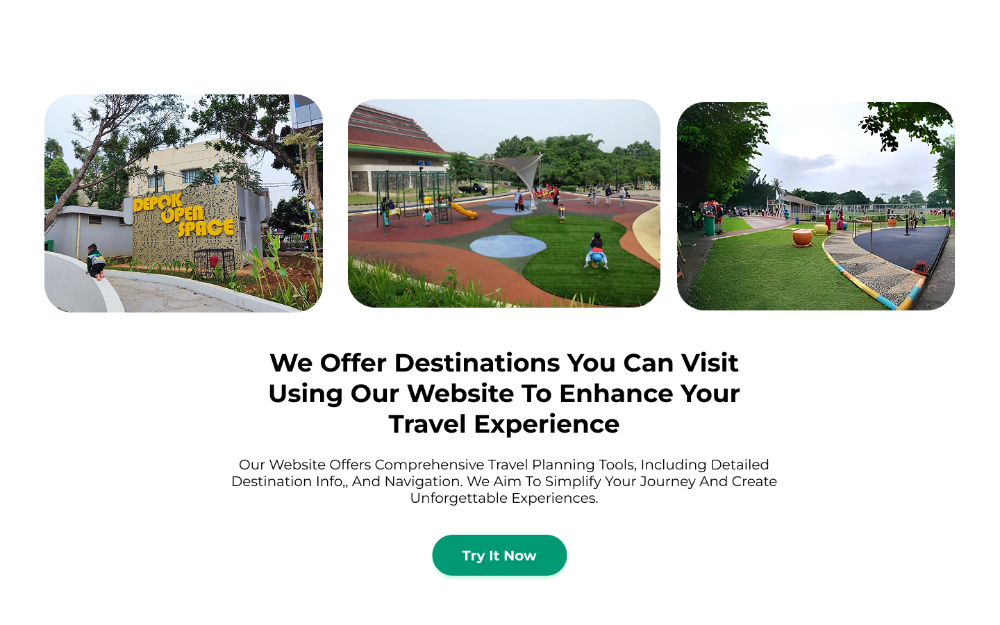
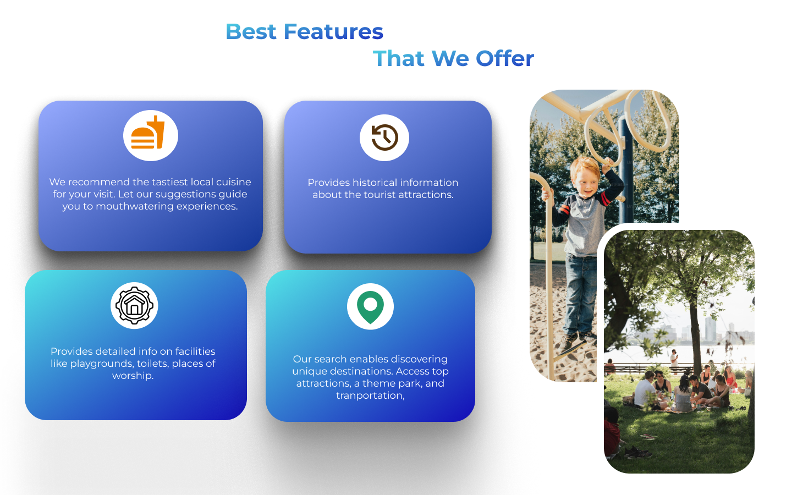
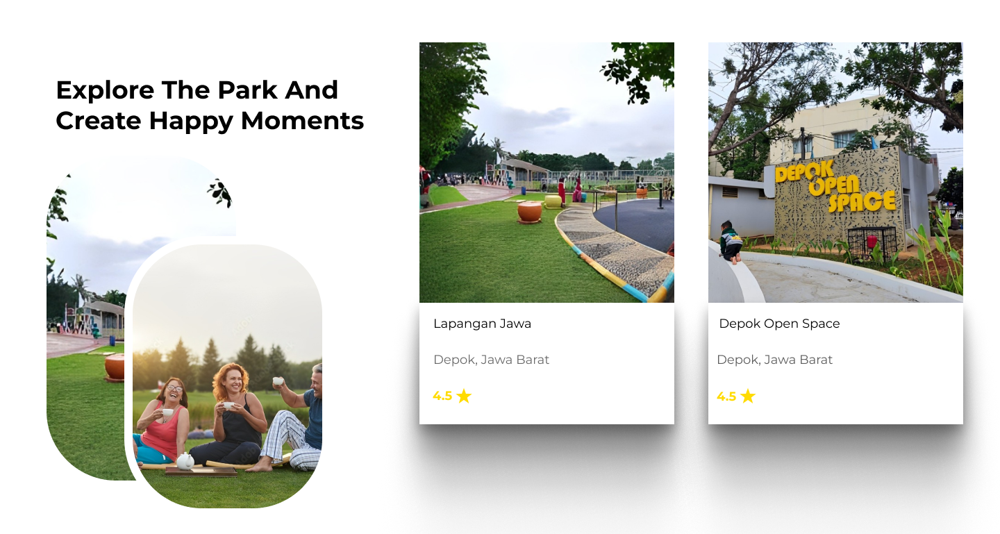

Rektar Web Concept
Eksplorasi desain antarmuka web untuk platform informasi pariwisata dan rekreasi alam. Fokus utama perancangan ini adalah menghadirkan tampilan visual yang segar, bersih, dan mudah dipahami oleh pengguna saat mencari informasi destinasi maupun tempat menarik.
Main Interface (Hero Section)

Tampilan halaman utama menggunakan gradasi warna hijau dan biru untuk merepresentasikan nuansa alam dan luar ruangan.
Interface Elements & Layouts
Destinasi & Tempat Wisata
Bagian ini menampilkan daftar rekomendasi tempat rekreasi dalam bentuk kartu (*card*) visual yang dilengkapi foto lokasi dan deskripsi singkat agar pengguna bisa langsung melihat pilihan tempat yang tersedia.

Fitur & Layanan Utama
Penyusunan informasi keunggulan platform menggunakan kotak-kotak menu terstruktur dengan ikon pendukung yang jelas, memudahkan pengunjung membaca poin-poin layanan yang ditawarkan.

Galeri Momen & Aktivitas
Bagian galeri visual untuk menampilkan dokumentasi kegiatan atau suasana di area rekreasi, disusun secara dinamis guna memperkuat daya tarik visual situs.
